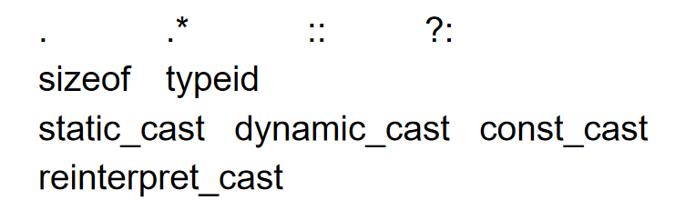

基本语法
C and C++
- C语言是C++语言的一个子集
- C语言与C++语言是兼容的
重载
- 要求参数个数不同。参数个数相同时，参数类型不同。参数中至少有一个类型不同
函数重载
| 函数重载 |
|---|
| void print(char * str, int width);
void print(double d, int width);
void print(long l, int width);
void print(int i, int width);
void print(char *str);
|
- 重载函数可以带有默认参数，但要注意二义性
| 二义性错误 |
|---|
| void func(int a); // 版本A
void func(int a, int b = 0); // 版本B
func(10); // 错误：二义性调用
|
操作符重载

| 成员变量形式 |
|---|
| const String String::operator+(const String& taht);
|
- 显式声明第一个参数
- 需要对两个参数做类型转换
- 可以做成友元
| 全局函数形式 |
|---|
| const String operator+(const String& r, const String& l);
// 友元函数声明 加全局实现
class Integer {
friend const Integer operator+ (
const Integer& lhs,
const Integer& rhs);
...
}
const Integer operator+(
const Integer& lhs,
const Integer& rhs){
return Integer( lhs.i + rhs.i );
}
|
= () [] -> ->* 等重载必须是成员++ --区分前缀和后缀
| const Integer& operator++(); //prefix++
const Integer operator++(int); //postfix++
const Integer& Integer::operator++() {
*this += 1;
return *this;
}
const Integer Integer::operator++(int) {
Integer old( *this );
++(*this);
return old;
}
bool Integer::operator==( const Integer& rhs) const {
return i == rhs.i;
}
bool Integer::operator!=( const Integer& rhs) const {
return !(*this == rhs);
}
A = B = C;
// executed as
A = (B = C);
|
| 整数示例 |
|---|
| z = x + y; //yes
z = x + 3; //yes
z = 3 + y; //no
|
对象间通信
消息通信
组成部分：接收者对象、消息选择器/方法名、参数
多态（Polymorphism）
| Ellipse elly(20F, 40F);
Circle circ(60F);
elly = circ;
|
- 只有那些能够被上层解析的部分被复制过去，部分被忽略
- 函数调用也归于上层
| Ellipse* elly = new Ellipse(20F, 40F);
Circle* circ = new Circle(60F);
elly = circ;
|
- 原先的elly实例丢失
- 两个都指向Circle实例
| void func(Ellipse& elly) {
elly.render();
}
Circle circ(60F);
func(circ)
|
- 这里引用像指针一样运行，调用的是Circle的方法
| void Derived::func() {
...
Base::func();
}
|
协议类/接口类
- 抽象类
- 所有的非静态成员变量都是纯虚函数，除了析构函数
- 虚析构函数空函数体
- 没有非静态成员变量
| 示例 |
|---|
| class CDevice {
public:
virtual ~CDevice();
virtual int read(...) = 0;
virtual int write(...) = 0;
virtual int open(...) = 0;
virtual int close(...) = 0;
virtual int ioctl(...) = 0;
};
|
Virtual Bases
- 当出现菱形继承的情况时，编译器无法选择路径，最底下的类会包含两份重复的继承
- 这时使用
virtual public就可以解决问题，只会保留一份继承
Stream extractor and inserter
- 必须为二参数全局函数
| stream extractor and inserter |
|---|
| istream& operator>>(istream& is, T& obj) {
// specific code to read obj
return is;
}
cin >> a >> b >> c;
// executed as
((cin >> a) >> b) >> c;
ostream& operator<<(ostream& os, const T& obj) {
// specific code to write obj
return os;
}
|
manipulators
| manipulators |
|---|
| ostream& manip(ostream& out) {
...
return out;
}
ostream& tab ( ostream& out ) {
return out << "\t";
}
cout << "Hello" << tab << "World!" << endl;
|
Conversion operations
| Conversion operations |
|---|
| Rational::operator double() const {
return numerator_/(double)denominator_;
}
Rational r(1,3); double d = 1.3 * r;
// 通用格式
X::operator T()
|
基本语法
头文件
将声明插入.cpp文件
| #ifndef HEADER_FLAG
#define HEADER_FLAG
// Type declaration here...
#endif // HEADER_FLAG
防止头文件重复包含
#include <iostream>
|
| // old1.h
namespace old1 {
void f();
void g();
}
// old2.h
namespace old2{
void f();
void g();
}
using namespace std;
using Mylib::foo;
using Mylib::cat
foo();
Cat c;
c.Meow();
|
cout << "Hello World!" << endl;
...
int main() {
/* 这是注释 */
/* C++ 注释也可以
* 跨行
*/
cout << "Hello World!";
cout << "Hello World!"; // 输出 Hello World!
return 0;
}
数据类型
线性容器
- vector: variable array
- deque: dual-end queue
- list: double-linked-list
- forward_list: as it
- array: as “array”
- string: char. array
typedef 声明
typedef type newname;
typedef int feet;
feet distance;
几点说明:
* typedef只是对已经存在的类型增加一个类型名，而没有创造新的类型.
* 当不同源文件中用到同一类型数据(尤其像数组、指针、结构体、共用体等类型数据)时，常用typedef声明一些数据类型，把它们单独放在一个头文件中，然后再需要用到他们的文件中用#include命令把他们包含进来，以提高编程效率.
枚举类型
枚举类型中，more第一个名称值为0，以此类推，但也可以给予初值。
enum color {red, green=5, blue} c;
c = red;
类型转换
静态转换 (Static Cast)
在转换时不做任何检查.
int i = 10;
float f = static_cast<float>(i);
动态转换 (Dynamic Cast)
动态转换在运行时进行类型检查，不能转换则返回空指针或引发异常.
class Base {};
class Derived : public Base {};
Base* ptr_base = new Derived;
Derived* ptr_derived = dynamic_cast<Derived*>(ptr_base);// 将基类指针转换为派生类指针.
常量转换 (Const Cast)
常量在编译时便确定，因此必须要初始化，除非时外部声明.
| 常量引用 |
|---|
| string p1("Fred");
const string* p = &p1; # 表示指向的对象为常量
sting const * p = &p1; # 同上
string *const p = &p1; # 表示指针为常量
|
用于将const类型的对象转换为非const类型的对象,只能用于转换掉const属性，不能改变对象的类型.
const int i = 10;
int& r = const_cast<int&>(i);
重新解释转换(Reinterpret Cast)
将一个数据类型的值重新解释为另一个数据类型的值.
int i = 10;
float f = reinterpret_cast<float>(i);
函数
const 函数
函数声明中添加const修饰符，表示该函数不会修改函数参数。
int add(const int a, const int b) {} 不修改传入参数
int add(int a, int b) const{} 不修改成员变量
引用
| 引用 |
|---|
| char c;
char* p = &c;
char& r = c; # 相当于重命名
|
引用
- 绑定关系在运行过程中不能改变
- 引用的目标一定要有具体的地址
| void func(int &);
func(i * 3); // Warning or error!
|
库
| #include <cstring>
size_t strlen(const char* str); # 不包括终止符
char *strcpy(char *dest, const char *src);
|
泛型类
generic classes
- 不指定具体类型的情况下定义类，然后在实例化时再指定具体的类型
templates
-
需要相同代码但是不同的类型时，使用模板
-
类模板
- 函数模板
可能的替代方法
| swap templates |
|---|
| template < class T >
void swap( T& x, T& y ){
T temp = x;
x = y;
y = temp;
}
|
- 重载规则：先检查是否有唯一匹配的函数，再检查是哦福有唯一的匹配的模板
| explicit templates |
|---|
| template <class T>
void foo(void) { /* … */ }
foo<int>(); // type T is int
foo<float>(); // type T is float
|
| class template |
|---|
| template <class T> class X { /* … */ };
X<int > x1;
//multiple types
template < class Key, class Value >
class Map { /* … */ };
// Non-Type parameters can have a default argument
template < class T, int bounds = 100 >
class Fixed Vector {
...
private:
T elements[bounds];
}
|
- Templates can inherit from non-template classes
template <class A>
class Derived : public Base(..0)
- Templates can inherit from template classes
template <class A>
class Derived : public List<A>(...)
- Non-template classes can inherit from templates
class SupervisorGroup : public List<Employee*>
模板建造
一些函数